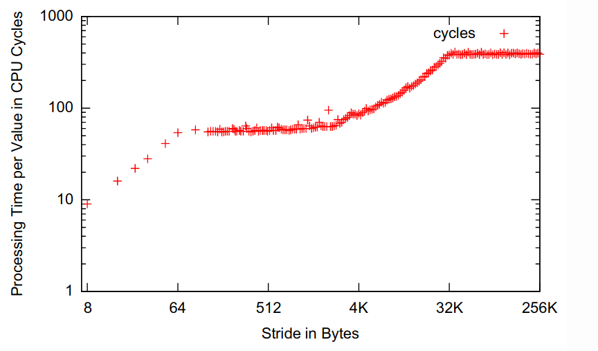
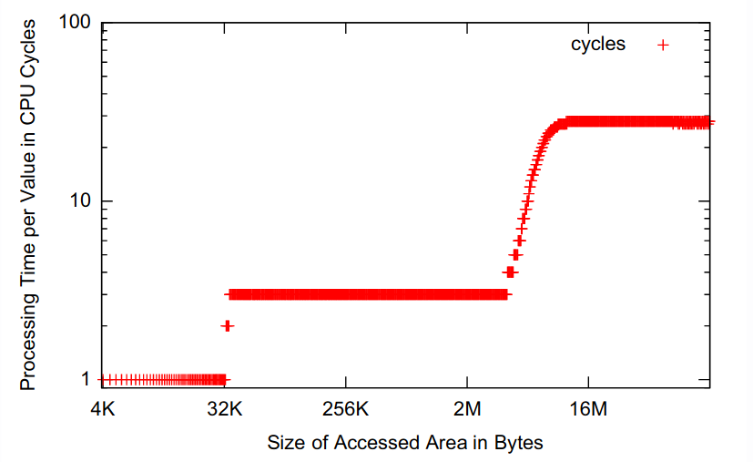
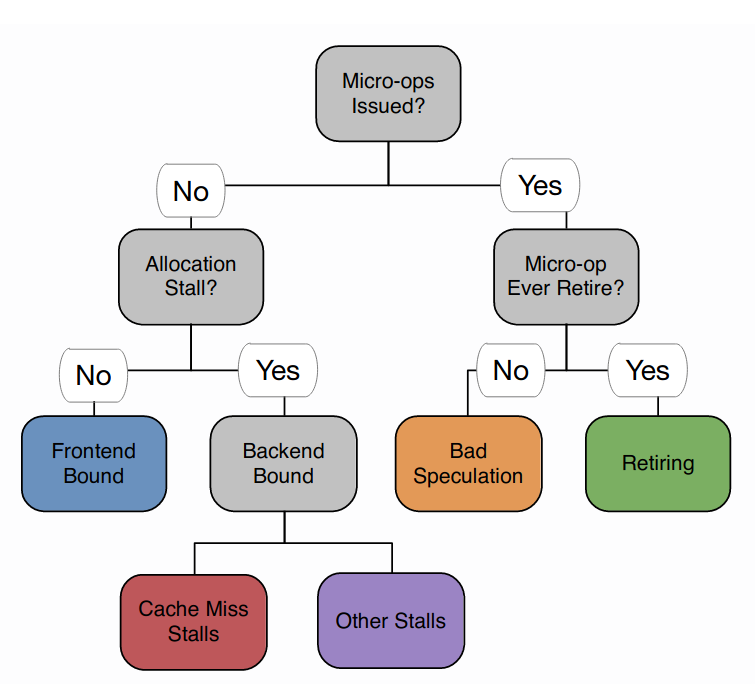

Lecture 2: Profiling and Performance Tracing
This lecture goes into more detail about identifying optimisation opportunities, specifically, we identify:
- the hot path (the code that takes the most time)
- the bottleneck within the hot path
Both of these are functions of system behaviour, described by events.
Events
Events are any change of the system state. Usually, we restrict events to a certain granularity, for example:
- Simple/atomic events (executed an instruction, loaded an address, clock tick, etc.)
- Complex events (cache line evicted from L1 to L2 cache, instruction aborted due to misspeculation, etc.)
An event may have an optional payload (which is metadata describing the event in more detail) and an accuracy: the event accuracy is the degree to which its value represents reality.
Events originate from an event source, which generally has two components:
-
the generator, which generates a new occurrance of an event. This is usually online (during runtime or part of the system). For example, the code in the kernel that sends network packets can be considered a generator of network events.
-
the consumer, which processes the events. It can be offline (the events are not used for any meaningful purpose) or online (the events are used in some way, such as calculating statistics of the events).
These events can be used for tracing or profiling.
Tracing
A trace is a complete log of every state the system has ever been in during a given period of time. Thus, a trace is comprised by a sequence of ordered events.
The accuracy of a trace is inherited from the events. Importantly, event collection may have a high overhead during tracing, which can lead to problems.
Example: Call stack tracing
Call stack tracing consists of sampling snapshots of the call stack of the application at regular intervals. Every time a function calls another function, a new frame is added to the stack. Therefore, we can trace how long our program spends in each function call.
A call stack consists of different function frames, each of which contain the required and relevant state to execute the function: variables, the return address and the saved frame pointer (if not optimised away during compilation). Each frame's saved EBP (frame pointer) points to the function it was called from. Hence, we can walk through the stack by following the frame pointers.
However, walking the stack can be expensive if the call stack is very deep (as the complexity is linear in terms of the number of function calls). In particular, for small functions, call stack processing can be more expensive than the function itself (because we need to save the EBP).
Perturbation and sampling
This issue is known as perturbation: the degree to which the performance of a system changes when it is being analysed. Although the overhead is unimportant (because we are not going to trace the program during production), perturbation can negatively affect accuracy if it is non-deterministic (ie: you don't know how much overhead you are adding).
We can reduce perturbation by reducing fidelity (the degree of exactness). In our context, this means:
- Perfect fidelity means every event is recorded
- Reduced fidelity means not every event is recorded
In practice, reducing fidelity works via sampling, where we collect events in regular intervals.
An interval is the distance between two samples being taken. We can specify interval lengths via:
-
Time-based intervals: set a hardware recurrent timer and sample whenever it runs out. The notion of time is usually captured via CPU reference cycles (because time in a CPU is not accurate, as clock rates may vary across different cores). These intervals are easy to interpret, as we are measuring time and this is inversely proportional to performance.
-
Event-based intervals: defined in terms of the occurrence of events (e.g.: sample every fifth function call). This gives us accurate results with low noise (using hardware counters), however it can be tricky to interpret (as we are usually interested in time).
Interval resolution is limited to (usually) discrete clock cycles, however time is continuous. This introduces a quantisation error when attributing an event to a particular clock cycle. For example, if we have an expensive SIMD instruction just before a simple MOV instruction, a profiler may tell us that the MOV instruction is being slow when in reality its the previous instruction which is slow (this is quantisation error).
Returning to the example of call stack sampling, we simply skip some events. This means some functions may be skipped but there is a good chance that expensive functions will be sampled more often. This gives us good performance and reduced perturbation.
Indirect tracing
An example of event-based interval sampling is indirect tracing. The idea is that events dominate each other, so we should only trace the dominant events.
We can think of it as intervals defined by the execution flow: if we have an if statement, then all the code in the branch that is taken will be deterministically executed. Therefore, we do not need to trace every instruction in the branch, we can just record the fact that the branch was taken in the first place. Hence, we say that control-flow instructions dominate non-control-flow instructions. We can count how many times a branch is executed (known as basic block counting).
Indirect tracing can be used to reduce overhead/perturbation (because we don't have to sample every instruction), however the fidelity/accuracy depends on the event and how much indirection there is.
Profiling
Profiling (in the context of performance engineering) is a characterisation of a system in terms of the resources it spends in the certain states. Since an event is a transition of states, we can derive a profile from events.
Specifically, a profile is an aggregate over the events of a specific metric. This is can be a global aggregate (eg: total cache misses, total CPU cycles) or an event-based aggregate (eg: cycles per instruction, cache misses by line of code).
Profiling is useful for:
- post-mortem analysis for ease of interpretation
- reducing perturbation by aggregating traces into profiles in real-time (assuming aggregation is faster than writing the traces to memory)
As mentioned earlier, events originate from event sources. These should be detailed, accurate and have little perturbation. Events can originate from:
- Software:
- Library: manual instrumentation, logging
- Compiler: automatic instrumentation
- OS: kernel counters
- Hardware:
- Performance counters
- Emulator: a hybrid of both, with minimal perturbation (but not scalable)
Instrumentation
Consists of augmenting the program with event logging code. There is no need for hardware support and extremely flexible. However, there is high overhead and high perturbation.
There are three approaches to instrumentation:
-
Manual instrumentation: basically using logging using
printf(or a logging library).- Advantages: fine-grained control, no hardware involvment
- Disadvantages: high runtime and implementation overhead
-
Automatic source-level instrumentation: source-to-source rewriting, usually compiler-supported.
- Advantages: todo, see interactive lecture
- Disadvantages: less control, compiler support required
-
Automatic binary instrumentation:
- Static (compile-time): simple, portable, instrumentation overhead is easily assessed from the binary
- Dynamic (runtime): no recompilation, works on a running process and with JIT-compiled code
An example of automatic instrumentation is the LLVM XRay framework, which can be used to automatically log every function call and exit. One limitation of this framework is that it only retains function calls that take more than 5 microseconds. For higher fidelity and lower overhead, we can look at performance counters.
Performance counters
An alternative to instrumentation for profiling is analysing performance counters.
Although software counters exist in OS kernels (packets sent/received, virtual memory operations, etc.), they are not often used. Instead, we prefer hardware performance counters.
Hardware performance counters are special registers that can be configured to count low-level events. Only a fixed number can be active during the profiling process and can be used to collect events and/or intervals.
Unfortunately, these are often buggy, poorly documented and may be inaccurate. However, the common performance counters are usually fine.
In Linux, we can use the perf tool to access different hardware performance counters. Many of these are often associated to cache behaviour, such as cache line evictions or cache misses.
Case Study: Microarchitectural bottleneck analysis
One of the most important types of analyses you can carry out to increase performance of software is by analysing behaviour and identifying bottlenecks at the microarchitectural level.
1. CPU pipelining and frontend stalls
First, we should understand how CPU pipelining works. A CPU maintains a pipeline of instructions which are at different stages: fetch, decode, execute, memory and write-back. The ideal situation is that the pipeline is filled, so as many instructions are being processed at a time (instruction-level parallelism). At every cycle, an instruction is retired (removed) from the pipeline.
Unfortunately, having a full pipeline isn't always possible due to control hazards, ie: jump instructions, because we need to change the instruction pointer. We cannot know where to jump to until the JMP instruction reaches the last slot of the 5-stage pipeline, meaning we only retire 1 instruction from 5 cycles (80% less than the ideal case). This scenario is known as a frontend stall, because the front of the pipeline doesn't know what instruction to read yet.
Branch prediction is a technique where the CPU speculates upon which branch may be taken and starts loading and executing instructions from within that branch immediately, rather than stalling the pipelining.
When the comparison/branch instructions are finally retired, the CPU figures out if we have correctly predicted the branch. If it mispredicts the branch, the CPU has to flush/clear the pipeline and restart from the branch instruction, which negatively affects performance. Such discarded instructions are referred to abandoned instructions.
2. Resource stalls
An ALU stall refers to when an expensive arithmetic instruction takes several clock cycles in the execution/memory stage and blocks the stream of instructions through the pipeline. For example, division is often an ALU stall because it may take several cycles to execute.
3. Memory subsystem and data stalls
Depending on what memory we access (L1 cache, L2 cache, LL cache or main memory), we will get different latencies.
The graph below shows that if we access values in nearby memory locations, the cost (in CPU cycles) is much lower. The greater the access stride, the more costly it is to read memory. This is due to how caches work and the size of cache lines (every 64 bytes corresponds to a different cache line).
The next graphs shows memory access latency (in cycles) depending on the size of the data. For a 4kB array, all our memory access will be hitting the L1 cache. Between 32kB and ~4MB, we access the last-level (L3) cache.
The key takeaway here is that CPUs can also stall on memory accesses.
Bottleneck analysis
Given the different types of stalls, we can identify different microarchitectural bottlenecks in order through which they may arise in the pipeline:
- Memory access stalls (which fetching the operands for an instruction)
- Resource allocation stalls (ALU stalls)
- Branch mispredictions (leading to abandonded instructions due to flushing)
- Control-flow dependencies
We can use the following decision tree to determine what the bottleneck is. Our starting node asks if a micro-operation has been issued (ie: has something happened?, has our pipeline advanced?).
If nothing has happened and there is no resource allocation stall (such as an ALU stall), then this is a frontend-bound issue, ie: no instructions entered the pipeline, likely due to a control-flow dependency (too many function calls or jumps in memory).
Otherwise, the bottleneck is backend-bound: cache miss stalls or resource stalls.
If there was a micro-op issued and some progress was made in the pipeline, then the instruction can either retire (good case) or abandoned due to bad speculation (likely due to too many branching code).
Tutorial notes
Possible exam questions: given an algorithm/data structure, what would the profile look like for it?
Ie: profile of a rebalancing operation in a Red-Black Tree (considering the size, depth, etc.)
-
A lot of code/instructions (long algorithm, a lot of recursion) -> likely to be frontend bound
-
Random memory accesses -> memory-bound
-
Code is highly OOP with a nice API (many function calls) -> frontend bound